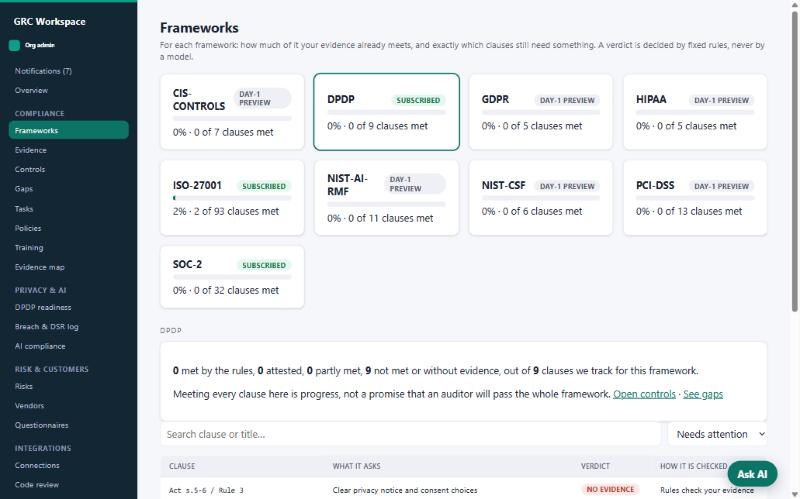
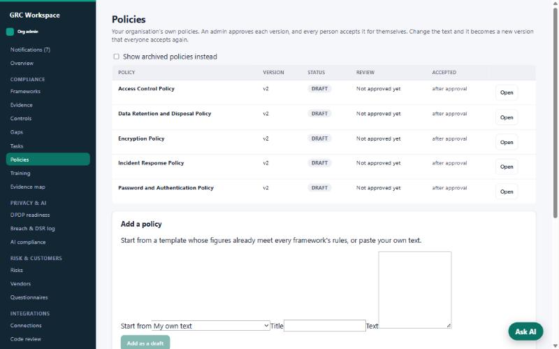
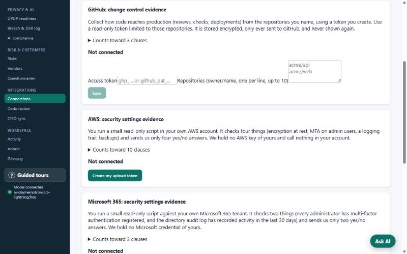

In progress since August 2026 · Compliance · Public on GitHub
One document, every framework
A buyer asks for a SOC 2 report and you have no compliance team. GRC lets you upload a policy once and checks it against every framework you follow: ISO 27001, SOC 2, PCI DSS, GDPR, HIPAA, NIST and India's DPDP. Every gap comes with the page it was found on. I'm using it to get my own company ready for SOC 2, and this page says exactly how far that has got.
The model never decides
The big compliance platforms now sell themselves as agentic AI. GRC goes the other way. Each job has exactly one owner, so every verdict can be reproduced and explained after the fact.
Reads the document
A vision model pulls facts out of the policy, each with the page it came from. It can run entirely on your own machine with Ollama. If the model is down, it reports nothing found, never a guess.
Decides pass or fail
Fixed rules, written as data per framework, compare the facts to each requirement. The same document always gets the same answer, and text inside a document can't talk its way to a pass.
Locks the result
Only a named auditor, staffed on that client, can record the verdict that closes a control. After that the company can no longer change it, and every step sits in a tamper-evident log.
Where no rule can be written yet, a named person states that a control is in place, with a date and an expiry. GRC shows that as attested, never as passed, because a statement is not a test.
Where it honestly stands
I'm using GRC on my own company first. These are the steps of a real SOC 2 audit and how far I've got, as of 21 November 2026.
| Step | Who does it | Status |
|---|---|---|
| Readiness check | The company | Done. Everything started red, and the gaps were left visible. |
| Policies and controls | The company | In progress. Five policies drafted and waiting for approval, two statements signed, seven suppliers and six risks recorded. |
| Evidence | The company | Barely started. Change history and weekly scans exist; the GitHub connection isn't switched on yet. |
| Scope and choosing an auditor | The owner | Not started. |
| The audit itself | An independent firm | Not started. No report exists and nothing is certified. |



What went wrong
Using my own product found real bugs. These are the ones worth telling.
- The invite failed for my own administrator. The sign-in service already had a login for that email, and the invite died with a vague "502". Found by using the product on myself, then fixed.
- Two framework clauses no longer existed. Checking the packs against the official sources showed two NIST CSF IDs that version 2.0 had withdrawn. Fixed on 21 November, with the rules version bumped so old verdicts still say which rules judged them.
- A live check expected the wrong error. It assumed a 401 where the real API answers 422. Running it once against the live site caught it.
- Policies can't be approved with blanks in them. The templates had placeholders like "[your organisation]". GRC refuses to approve text that still has them, or text that changed after the approver read it.
What this page does not claim: no audit has started, no audit firm is chosen, and nothing is certified. GRC helps organise the work; it does not make a company compliant by itself. The code is public on GitHub, but it has no open-source licence yet.